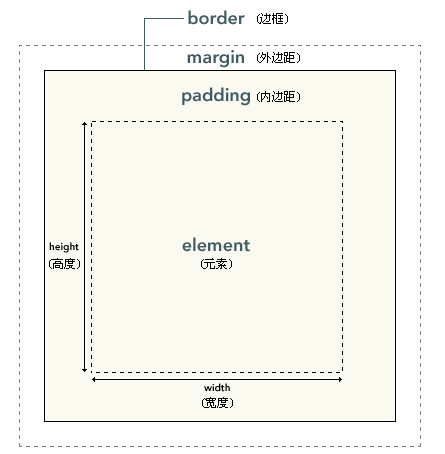

CSS框模型概述
CSS边框
CSS内边距
CSS外边距
垂直外边距的重叠
CSS框模型概述
CSS处理网页时，它认为每个元素都包含在一个不可见的盒子里。
如果把所有的元素都想象成盒子，那么我们对网页的布局就相当于是摆放盒子。
我们只需要将相应的盒子摆放到网页中相应的位置即可完成网页的布局。
CSS 框模型 (Box Model) 规定了元素框处理元素内容、内边距、边框 和 外边距 的方式
CSS 框模型概述：

术语：
- element : 元素
- padding : 内边距，也有资料将其翻译为填充
- border : 边框
- margin : 外边距，也有资料将其翻译为空白或空白边
CSS边框
元素的边框 (border) 是围绕元素内容和内边距的一条或多条线。
CSS border 属性允许你规定元素边框的样式、宽度和颜色。
每个边框有 3 个方面：宽度、样式，以及颜色：
1、border-width：您可以通过 border-width 属性为边框指定宽度
为边框指定宽度有两种方法：可以指定长度值，比如 2px 或 0.1em；或者使用 3 个关键字之一，它们分别是 thin 、medium（默认值） 和 thick。
注释：CSS 没有定义 3 个关键字的具体宽度，所以一个用户代理可能把 thin 、medium 和 thick 分别设置为等于 5px、3px 和 2px，而另一个用户代理则分别设置为 3px、2px 和 1px。
定义单边宽度：可以按照 top-right-bottom-left 的顺序设置元素的各边边框
p {border-style: solid; border-width: 15px 5px 15px 5px;}
<!--上面的例子也可以简写为（这样写法称为值复制）-->
<!--上 左右 下-->
p {border-style: solid; border-width: 15px 5px 5px;}
<!--上下 左右：-->
p {border-style: solid; border-width: 15px 5px;}
您也可以通过下列属性分别设置边框各边的宽度：
- border-top-width
- border-right-width
- border-bottom-width
- border-left-width
2、border-color：设置边框颜色，它一次可以接受最多 4 个颜色值。
p {
border-style: solid;
border-color: blue rgb(25%,35%,45%) #909090 red;
}
还有一些单边边框颜色属性。它们的原理与单边样式和宽度属性相同：
- border-top-color
- border-right-color
- border-bottom-color
- border-left-color
3、border-style：设置边框样式，可选值如下：
- none 定义无边框
- hidden 与 "none" 相同。不过应用于表时除外，对于表，hidden 用于解决边框冲突。
- dotted 定义点状边框。在大多数浏览器中呈现为实线。
- dashed 定义虚线。在大多数浏览器中呈现为实线。
- solid 定义实线。
- double 定义双线。双线的宽度等于 border-width 的值。
- groove 定义 3D 凹槽边框。其效果取决于 border-color 的值。
- ridge 定义 3D 垄状边框。其效果取决于 border-color 的值。
- inset 定义 3D inset 边框。其效果取决于 border-color 的值。
- outset 定义 3D outset 边框。其效果取决于 border-color 的值。
如果您希望为元素框的某一个边设置边框样式，而不是设置所有 4 个边的边框样式，可以使用下面的单边边框样式属性：
- border-top-style
- border-right-style
- border-bottom-style
- border-left-style
4、border：边框的简写样式，通过它可以同时设置四个边框的样式、宽度、颜色，而且没有顺序要求，但是不能分别指定，只能同时指定四个边。
如果您希望为元素框的某一个边设置边框：
- border-top
- border-right
- border-bottom
- border-left
示例：
<div style="width: 100px;
height: 100px;
background-color: palevioletred;
border-width: 10px;
border-color: red green yellow blue;
border-style: dotted dashed solid groove;">
</div>
<div style="width: 100px;
height: 100px;
background-color: palevioletred;
border: solid red 10px;"></div>
效果展示：
CSS内边距
padding：定义元素的内边距。padding 属性接受长度值或百分比值，但不允许使用负值
padding可接受1-4个值，分别代表上右下左内边距，也可以设置单边内边距：
- padding-top
- padding-right
- padding-bottom
- padding-left
示例：
<div style="width: 100px;
height: 100px;
background-color: palevioletred;
border: solid blue 10px;
padding-top: 20px;
padding-right: 2em;
padding-bottom: 2ex;
padding-left: 10%;">
<div style="width: 100%;
height: 100%;
background-color: red;">
</div>
</div>
效果展示：
CSS外边距
margin：设置外边距。这个属性接受任何长度单位、百分数值甚至负值。
margin 属性接受任何长度单位，可以是像素、英寸、毫米或 em。
margin 可以设置为 auto，最大。如果两侧外边距都设置auto，则居中
更常见的做法是为外边距设置长度值。下面的声明在 h1 元素的各个边上设置了 1/4 英寸宽的空白：
h1 {margin : 0.25in;}
h1 {margin : 10px 0px 15px 5px;}
与内边距的设置相同，这些值的顺序是从上外边距 (top) 开始围着元素顺时针旋转的：
margin: top right bottom left
另外，还可以为 margin 设置一个百分比数值：p {margin : 10%;}
百分数是相对于父元素的 width 计算的。上面这个例子为 p 元素设置的外边距是其父元素的 width 的 10%。
margin 的默认值是 0，所以如果没有为 margin 声明一个值，就不会出现外边距。
但是，在实际中，浏览器对许多元素已经提供了预定的样式，外边距也不例外。
例如，在支持 CSS 的浏览器中，外边距会在每个段落元素的上面和下面生成“空行”。
因此，如果没有为 p 元素声明外边距，浏览器可能会自己应用一个外边距。
当然，只要你特别作了声明，就会覆盖默认样式。
margin可接受1-4个值，分别代表上右下左，也可以设置单边外边距：
- margin-top
- margin-right
- margin-bottom
- margin-left
示例：
<div style="width: 100px;
height: 100px;
background-color: palevioletred;
border: solid blue 10px;
margin: 0px 0px 0px 100px;">
</div>
效果展示：
垂直外边距的重叠
在网页中垂直方向的相邻外边距会发生外边距的重叠，
兄弟元素之间的相邻外边距会取最大值而不是取和。
在网页中垂直方向(水平方向取和)的相邻外边距会发生外边距的重叠，
兄弟元素之间的相邻外边距会取最大值而不是取和。
如果父子元素的垂直外边距相邻了，则子元素的垂直外边距会设置给父元素（父元素整体下移）;
为了解决这一问题，思路就是设置一个元素，让其隔开父子元素，使其不相邻
示例：
<div style="width: 50px;
height: 50px;
background-color: palevioletred;
margin: 0px 0px 50px 0px;">
</div>
<div style="width: 50px;
height: 50px;
background-color: palevioletred;
margin: 50px 0px 0px 0px;">
</div>
<div style="width: 100px;
height: 100px;
background-color: yellow;">
<div style="width: 50px;
height: 50px;
background-color: palevioletred;
margin: 50px 0px 0px 0px;">
</div>
</div>
<div style="width: 100px;
height: 99px;
background-color: yellow;
border-top: 1px red solid;"> <!--padding-top: 1px;-->
<div style="width: 50px;
height: 50px;
background-color: palevioletred;
margin: 50px 0px 0px 0px;">
</div>
</div>
效果展示：